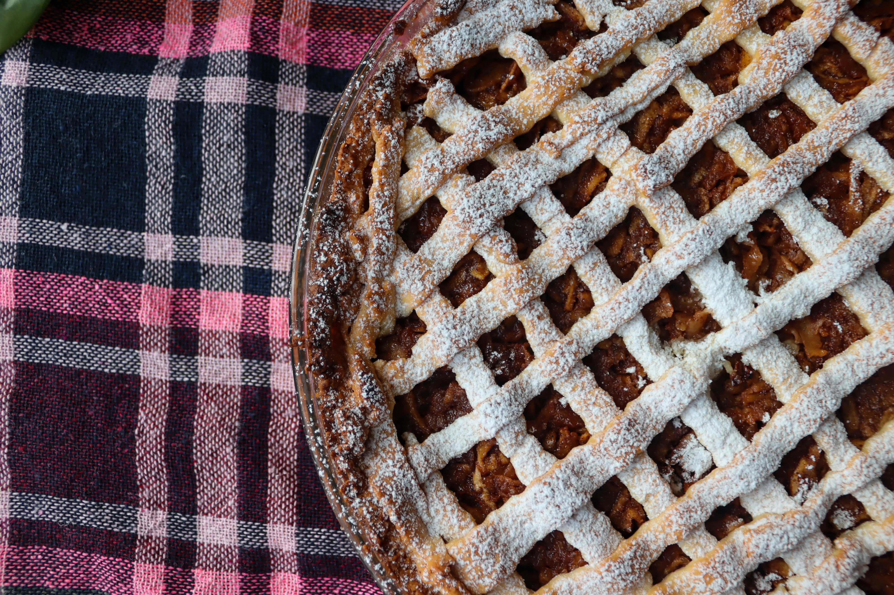

Pastafrola

by Ana Maria Zamorano
INGREDIENTES
- Huevo 1
- Yema 1
- Harina leudante 400 gr
- Azúcar 200 gr
- Manteca 200 gr
- Esencia de vainilla 1cda
- Sal 1 cdta
- Dulce de membrillo 200 grs
- Dulce de batata 200 grs
- Agua c/n
PREPARACION
- Lo primero que vamos a hacer es poner en un bol la manteca cortada en cubitos. Que no esté super fría ni muy derretida. La vamos a batir con el azúcar hasta que se forme una crema clarita y bien lisa.
- Ahora vamos a sumar el huevo y la yema, la esencia de vainilla y la ralladura de limón, y volvemos a batir. No se asusten si al principio parece que la mezcla se “corta”, es hasta que las yemas se integren bien con la manteca.
- Cuando la preparación esté unida y lisa de nuevo, vamos a dejar de lado la batidora y agarrar una espátula. Agregamos el harina leudante y la vamos incorporando con la espátula hasta que se pueda mezclar con las manos. La idea es integrar la masa, no amasarla como un pan! Una vez que esté bien unida, la ponemos en un film y la llevamos a la heladera 30 minutos.
- Mientras vamos con el relleno de pasta frola: cortamos el dulce (o los dulces en mi caso) en cubitos, lo ponemos en un bol, agregamos una cucharada de agua aproximadamente y lo llevamos al microondas un minuto a potencia media para derretirlo. Cuando sale, lo aplastamos con un tenedor o un pisapapas. Tengamos cuidado en esta parte, porque el dulce de membrillo se calienta y quema mucho!
- Sacamos la masa de la heladera y vamos a armar la base en un molde con la técnica de los capos n°1, aplastándola con el puño y un film. (en el video se ve clarísimo). Acomodamos los bordes y rellenamos la pasta frola con los dulces de membrillo y batata derretidos.
- Ahora viene la magia de la técnica de los capos n°3: la decoración. Ponemos la masa entre dos films, la estiramos y la mandamos al congelador. Sacamos el film de arriba y cortamos con una cuchilla las tiras, prestado atención de cortar el film de abajo también. Después levantamos desde el film la tira y la ponemos directamente sobre el relleno, cuando esté bien acomodada, sacamos el film y listo!
- La llevamos al horno a 200° por unos 40 minutos o hasta que esté doradita.